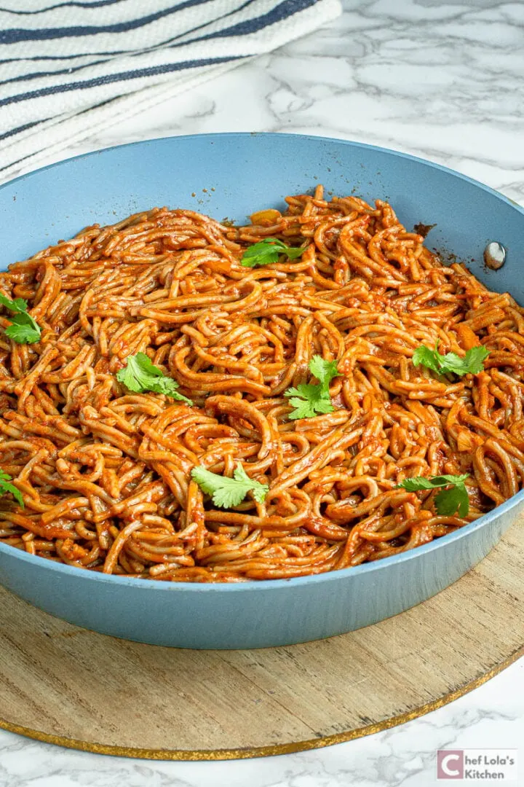

If you haven't tried Jollof spaghetti yet, I seriously recommend giving it a shot. It's a tasty and unique dish that is perfect for spicing up your usual pasta nights. This recipe uses one pot and it's ready in 30 minutes.
Ingredients
Spaghetti:
Red bell peppers, tomatoes, scotch bonnet, and onions - for making the sauce. The habanero brings heat and spiciness to the sauce. If you're not a fan of spicy food, you can use less or omit it altogether.
Onions, garlic, and fresh ginger - add depth to the sauce
Paprika, thyme, curry powder, bay leaves, bouillon powder, salt, and pepper - essential for flavoring the sauce.
Broth - chicken, beef, or vegetable broth will work
optional - You can also add some optional veggies like peas, sweet corn, and carrots for extra color and nutrition. And if you want to make it a full meal, you can add some cooked protein of your choice, like diced chicken, shrimp, or tofu.
Steps
Blend bell pepper, scotch bonnet, tomatoes, and onion until smooth.
Sauté onion, garlic, and ginger in oil, then add tomato paste.
Mix in blended sauce, spices, and broth, and bring to a boil.
Add pasta and cook until al dente.
Stir in vegetables, if using, and simmer for 2-3 minutes.